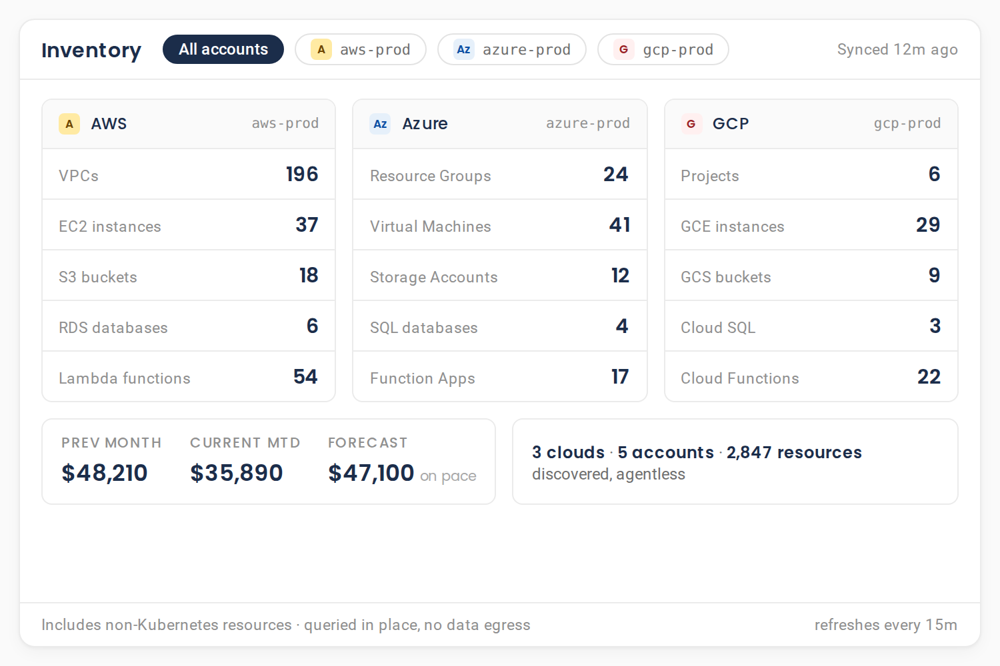
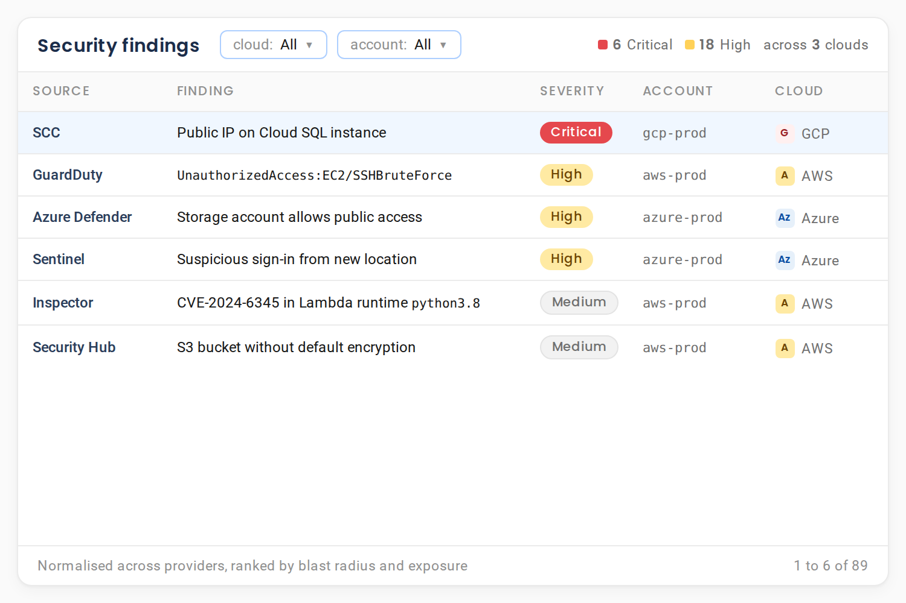
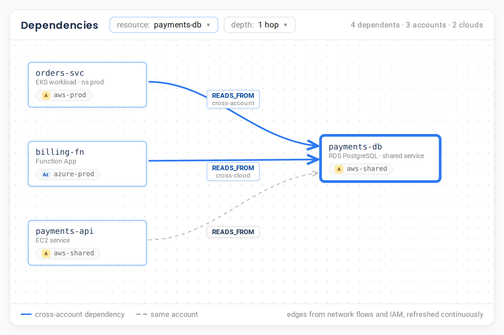
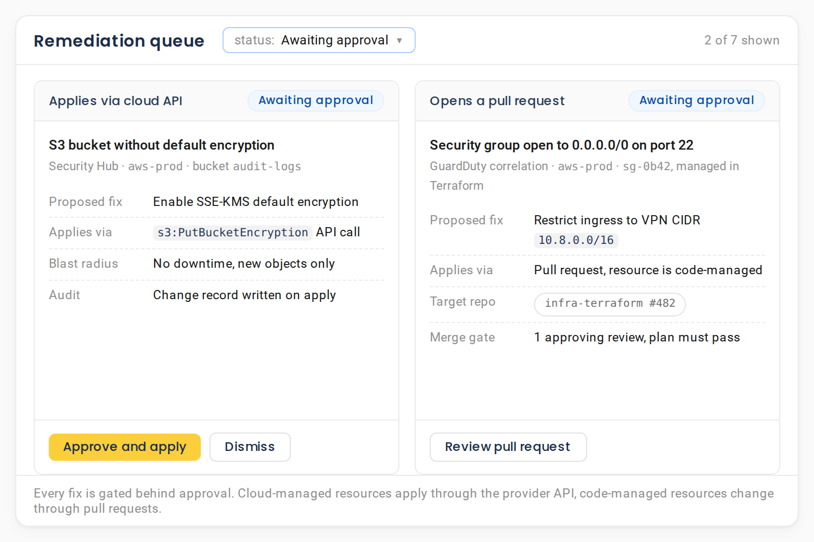

One AI console for AWS, Azure and GCP
Your inventory, your security findings and your remediations across every cloud, in one place, with the three providers treated the same way. Self-hosted, and nothing changes without your approval.
AWS, Azure and GCP · Self-hosted · Zero telemetry · Free forever tier
What is AI CloudOps?
AI CloudOps is AI for IT operations across every cloud: an AI agent for CloudOps that runs multi-cloud IT operations from one console, with a unified inventory across AWS, Azure and GCP, correlated security and cost findings, and remediation through each cloud's own APIs. NudgeBee runs in your environment and applies every change only after human approval. Think of it as a multi cloud management platform for operations, cost and security, not for provisioning.
Every account, every cloud, one inventory
Instead of three consoles and three mental models, you get one list of what exists, where, and in what state.
- Dozens of AWS service scanners, the deepest coverage of the three clouds.
- Broad Azure coverage across the estate.
- GCP, read through the same single collector.
- Everything normalised into one data model and one recommendation taxonomy.


Security findings from every cloud, in one queue
Findings are ranked in the same queue as everything else, so a critical exposure in a rarely-watched account does not sit unseen in a console nobody opens.
- AWS GuardDuty
- Inspector
- Security Hub
- Azure Defender
- Sentinel
- Kubernetes RBAC
- CIS benchmarks
It connects resources across accounts, not just within them
A knowledge graph links resources and their real dependencies across accounts and clouds, using a set of default cross-account rules.
That means a change or failure in a shared service can be traced to everything downstream of it, even when the downstream sits in a different account or a different cloud. One graph spans AWS, Azure and GCP, so a dependency does not fall out of view just because it lives in another team's account.


Fixes applied through each cloud's own APIs
When you approve a change, NudgeBee applies it the native way, through each cloud's own APIs, a Kubernetes patch, or a pull request. These fixes run as durable, approval-gated runbook automation.
Apply coverage varies by service, so major services are supported directly and everything else lands as a pull request.
- A cloud API change for supported services on AWS, Azure and GCP, through the provider API.
- A Kubernetes patch applied to the deployment in your cluster.
- A pull request raised against your infrastructure repository, the GitOps way.
AIOps services across AWS, Azure and GCP
The operational work that normally needs three consoles, run by one agent: inventory, security findings and remediation, with the three providers treated the same way.
Multi cloud management usually means one tool per provider and a spreadsheet to reconcile them. This is one cloud management platform over all three, and AI driven cloud management in the practical sense: the agent reads every account, ranks what matters, and carries the fix through to your approval.
Inventory
Dozens of AWS service scanners, broad Azure coverage and GCP read through the same collector, normalised into one data model and one recommendation taxonomy.
Security findings
GuardDuty, Inspector, Security Hub, Azure Defender and Sentinel, plus Kubernetes RBAC analysis and CIS benchmark scans, ranked in one queue instead of three.
Remediation
Applied through each cloud's own API, as a Kubernetes patch, or as a pull request against your infrastructure repository, always after your approval.
The same console surfaces cost optimisation findings and incident investigations, so a cloud team does not switch tools to see spend, security and reliability across every cloud. Go deeper on cost with AI FinOps and on incidents with AI SRE. CloudOps is the breadth layer over both, in one place.
Cost and incidents share the same pane
One console for spend, security and reliability across every cloud, so the team stops switching tools to get the full picture.
It reads freely. It changes nothing without you.
Two modes, drawn at the tool layer, not left to the model's judgement.
Reads every cloud without asking
Read-only reads run without asking, so building the picture across your clouds is never slowed by a prompt.
Gated behind your approval
Every create, update and delete is classified at the tool layer and gated behind explicit human approval. Before it applies a change, it scores the blast radius from the live dependency graph and auto-applies only what is safe. Everything else waits for your approval.
No self-granted access
The agent is forbidden from modifying IAM or RBAC to grant itself access it lacks.
It does the work, not you
It never asks you to go and run commands yourself.
Untrusted by default
All tool output is treated as untrusted input, a deliberate prompt-injection defence.
 Slack
Slack Microsoft Teams
Microsoft Teams- Google Chat
- Signed link
Your cloud data does not leave your environment
Self-hosted
Runs in your own environment.
Zero telemetry
Nothing shipped to a third party.
Outbound only
The in-cluster agent dials out only. No inbound ports, no exposed API server, no VPN.
Least-privilege onboarding
AWS onboarding via STS AssumeRole with an External ID. Credentials encrypted at rest with AES-256-GCM.
Bring your own model
Eleven provider routes including AWS Bedrock, OpenAI, Azure OpenAI, Google AI, Vertex AI, SageMaker, HuggingFace, Anthropic, Ollama and vLLM.
Readable source
Read the implementation, with a free Community edition.
Nothing leaks to the model
Outbound AI requests are scanned for secrets before they reach any model, and can be redacted or blocked.
See it across a real multi-cloud estate
Multicloud complexity does not slow down when your team does. NudgeBee's SRE and AIOps agents absorb routine operations autonomously so our teams focus on high-value engineering. Their extensive library of specialist agents gives Rackspace the building blocks to rapidly create custom agentic workflows at scale.
Healthcare enterprise saves $1.2M a year across 4,500+ instances
Every dollar mapped to a business outcome, rightsizing actioned via automated pull requests, and real-time cost visibility for product owners, with zero compliance breaches and a 14-day deployment.
Read the case studyFrequently asked questions
For the lead who has to answer for every cloud at once.
Book a DemoCloudOps is one of four assistants on the same platform
One platform, one knowledge graph. Add another assistant with no new install and no re-integration.
Put every cloud in one console.
Free forever. Self-host at any scale, or run 2 clusters or cloud accounts free on Cloud SaaS. Nothing leaves your environment. No credit card.